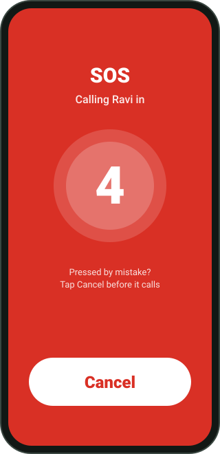

New
An easy phone for the people you look after.
Senior mode turns any Android phone into a simple one: a big clock, big buttons for family and favourite apps, SOS, reminders and an easy phone screen.
Part of Decoy Launcher, and free. Set it up on your own phone first and copy it to theirs, or set it up on theirs in four steps.

Turn it on
WhereHome settings›Home screen›Layout›Senior
It's also in Decoy Settings › Senior mode. When you go back to the home screen, a four-step setup opens:
- Easy to see: how many buttons in a row, and how big the text is.
- Family: add the people to call with one tap.
- Apps: tick the apps for the home screen.
- Safety: who SOS should call (leave it empty to call 112), and an optional PIN so nothing gets changed by accident.
Each step can be skipped and changed later. To go through it again: Senior mode settings › Run the setup again.
Turning Senior mode off brings the normal home screen back, and everything you set up is kept for next time.
The home screen
At the top: the time, the date, a greeting and the battery, which turns red when it's low. Below it, today's reminders, then big buttons. Tap + after the buttons to add:
- A person: one tap calls them, or opens WhatsApp, a video call or a text.
- An app or a website.
- A quick action: SOS, the torch, Wi-Fi, Bluetooth for hearing aids, ring mode, louder and quieter, the camera, alarms, the magnifier, the phone screen and more.
- A widget: any app's widget or one of Decoy's own, a Photo frame of family photos that change every few seconds, or a Today card with the date, the weather and the day's reminders.
- A folder of apps, people and websites, such as "Games" or "Family".
Hold a button to move, rename or remove it, or use the pencil at the bottom. The ☰ All apps button lists every app, as a big list or a grid with a search box. Hold an app there to hide it or give it a simpler name.
The Magnifier action reads small print: the camera zoomed in, with the light on.
Calling family
WhereSenior mode settings›Calling
- Start calls straight away: tapping a person calls them, without the dialler. It needs the Phone permission; without it, the dialler opens with the number in.
- Ask how to call every time: a phone call, WhatsApp, a video call or a text.
- Ask before calling: a big Yes / No first, so a stray tap doesn't call anyone.
People are added one at a time from the contacts, and only copies are kept. Contacts access is only needed for WhatsApp, Telegram and Signal calls.
The big phone screen
WhereSenior mode settings›Phone & messages
- Big phone screen: the Phone button opens a big keypad, the home screen's contacts and recent calls. Add a Phone quick action for it too.
- Missed calls and messages show on the home screen, so nothing gets missed. Allow notification access when asked.
SOS
WhereSenior mode settings›Quick actions & SOS
- Under Emergency contact, pick a person or type a number. With none set, SOS opens the dialler with 112.
- Leave the 5-second countdown on: SOS shows a big Cancel button before it calls.
- Add an SOS button to the home screen.
In Family & safety, SOS can also sound a loud alarm with a flashing light to get attention nearby, and start when the power button is pressed 5 times, even with the screen off or another app open.

Reminders
WhereSenior mode settings›Reminders›Add a reminder
Tablets, appointments, calls to make: each reminder shows on the home screen on its days, with a big Done button. It can also ring with a big alarm screen, with Done and Remind me later.
Allow notifications for Decoy when asked, so reminders and the daily check-in can ring.
Family & safety Premium
WhereSenior mode settings›Family & safety
- Who gets the texts: up to 5 family members, and the name to use for this person, such as "Mum" or "Grandpa Ram".
- Daily "I'm OK": a big button every day. If it isn't tapped by the time you set, the phone rings to ask. Tapping it can open the messaging app with a short "I'm OK" text for the family.
- "Please charge me": a big orange sign on the home screen at 15% battery and below.
- Send a test text to check that the family's numbers work.
The daily check-in, texts to family and copying the layout need Premium. Everything else in Senior mode is free.
Size and colours
WhereSenior mode settings›Buttons & text,Colours & wallpaper,Top bar
- Buttons: how many per row, circle, rounded, square or card shapes, spacing and icon size.
- Text: size, bold, and a standard, serif or typewriter font; names under the buttons, or pictures only.
- Colours: light, dark or following the phone, and High contrast: pure black and white with a strong accent, the easiest to read.
- Top bar: clock size and format, the date, a greeting, the battery percentage, and full screen.
Reset the look puts sizes and colours back without touching the buttons, contacts or reminders.
Help for shaky hands and tired eyes
WhereSenior mode settings›Notifications & helpers
- Hold to open: a tap only says the button's name; holding it opens it.
- Ignore repeated taps: a shaky double tap opens things only once.
- Read names aloud when a button is tapped, and a small buzz to confirm the tap.
- Voice button: a big microphone to ask or call by voice.
- Notification dots, or a red badge with the number, on apps with something new.
Keep it from changing
WhereSenior mode settings›Protection
- Senior PIN (4 to 8 digits): asked before Settings and before adding, moving or removing buttons. A fingerprint or the phone's lock works too.
- Lock home screen: only the favourite people and apps stay; no + button, no All apps list, and Settings opens only by holding the lock icon at the top.
- Send other apps back home: anything opened from a notification, recent apps or a link goes straight back. Calls, alarms and the keyboard still work.
- Keep the notifications closed, so Android's settings can't be reached.
The last two use the accessibility service. Decoy explains what it's used for before it's turned on, and it never reads what's on the screen.
Set it up on your phone, copy it to theirs Premium
WhereSenior mode settings›Copy to another phone
- Set up Senior mode on your own phone, the way they'll need it.
- Tap Show a QR code, or Save to a file and send the file to their phone.
- On their phone: Senior settings › Copy to another phone › Scan a QR code, or open the file.
Their buttons, contacts, reminders and settings are replaced by the copied ones. Their PIN stays the same.
Questions
Is Senior mode free?
Yes. The home screen, buttons, SOS, reminders, the phone screen, the PIN and the helpers are free. The daily "I'm OK" check-in, texts to family and copying the layout to another phone need Premium, a one-time payment.
Which languages does it speak?
English, Hindi, Bengali, Marathi, Tamil, Telugu, Urdu, Arabic, Chinese, French, Spanish, Portuguese and Russian. It follows the phone's language.
Does it need access to all their contacts?
No. People are picked one at a time and copies are kept in Decoy. Contacts access is only asked for if you want WhatsApp, Telegram or Signal calls.
How do I get the normal home screen back?
Open Senior mode settings (hold the lock icon at the top if the home screen is locked, and enter the Senior PIN) and tap Turn off. Everything is kept for next time.
Is anything sent anywhere?
No. Everything is stored on the phone and goes with Decoy's own backups. Texts to family go from the phone's own messaging app, when they're sent.